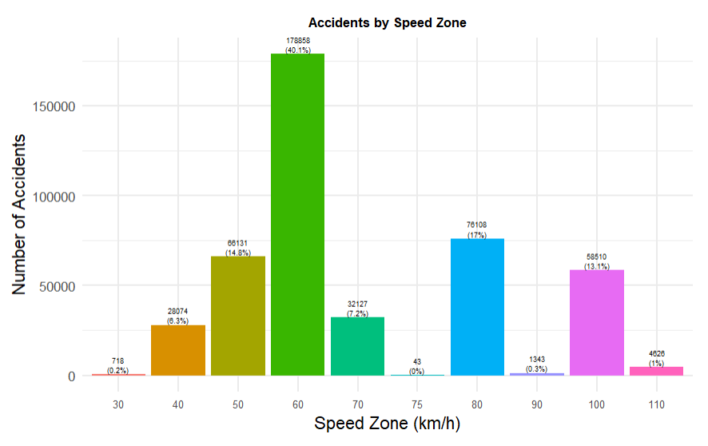
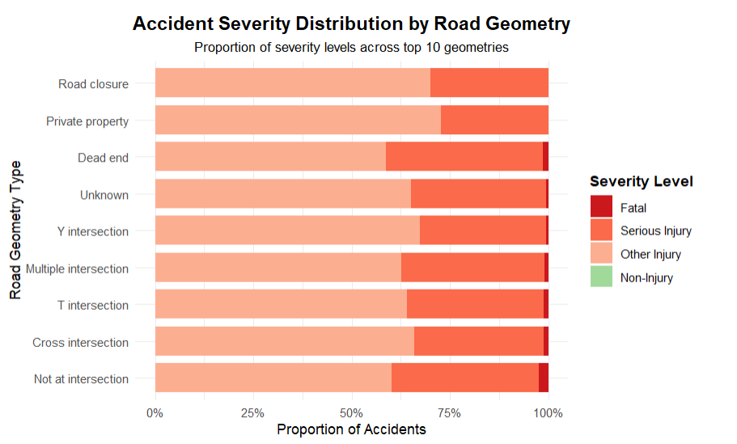
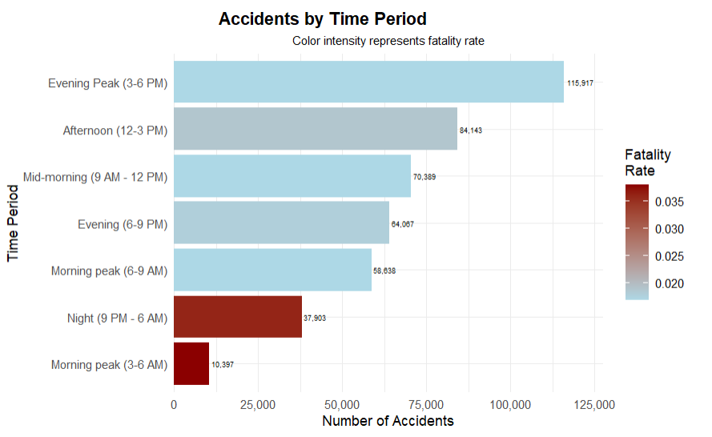
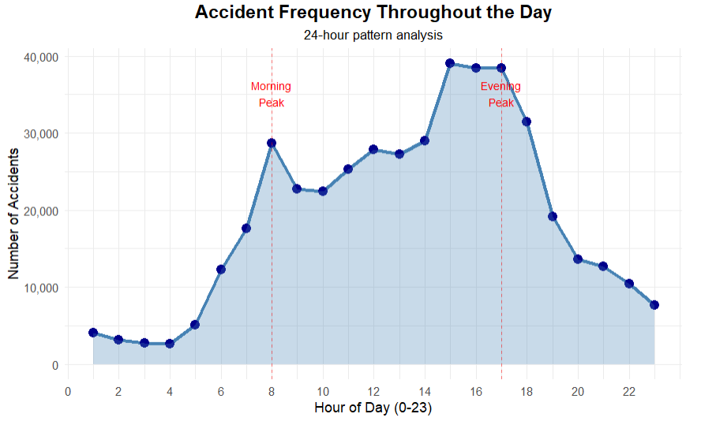
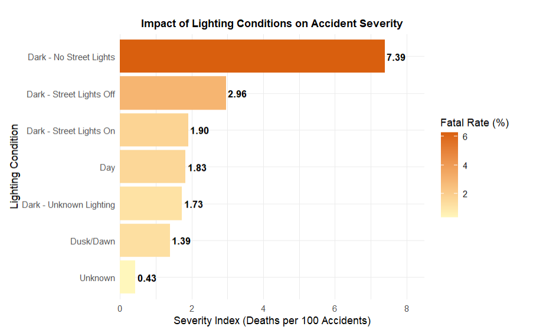
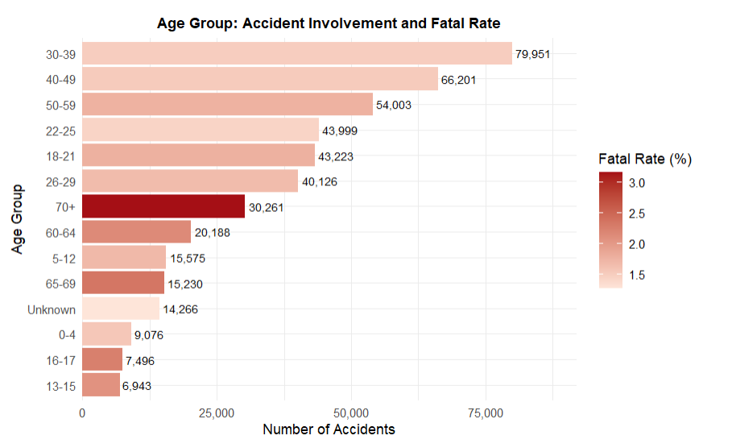
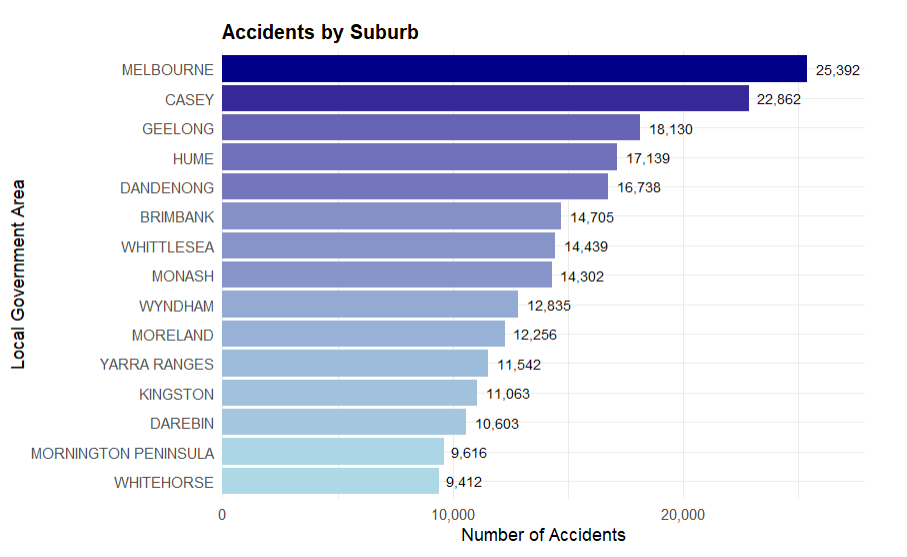

Overview
This project analyses Victorian road crash data as a road safety consulting brief for a government transport agency. The goal was to turn messy, undocumented government data into a small set of findings a transport safety team could act on.
Victoria's road crash data is published as four separate files covering accident details, crash locations, people involved, and atmospheric conditions. After merging and cleaning the files, the analysis explored what drives accident frequency and severity across speed zones, road geometry, time of day, lighting, weather, and driver age.
The Data
- Source: Victoria Road Crash Data, Victorian Government open data portal.
- Structure: 4 linked CSV files joined on the common
ACCIDENT_NOkey. - Scale: Approximately 186,000 accident records and more than 20 variables spanning crash type, severity, road geometry, speed zone, time, weather and demographic information.
- Constraint: No data dictionary was supplied, so coded fields required interpretation and independent verification.
Approach
1. Import and merge
All four files were loaded, column names and data types were standardised, and the datasets were joined on the shared accident key.
df_accident_merged <- df_accident %>%
left_join(df_node, by = "ACCIDENT_NO") %>%
left_join(df_atmos, by = "ACCIDENT_NO") %>%
left_join(df_person, by = "ACCIDENT_NO")2. Diagnose and clean
dfSummary() and glimpse() were used to profile the dataset. Missingness was quantified per field rather than dropping rows outright. Missing categorical fields were labelled Unknown to preserve crash records while keeping the gaps visible and auditable.
summary_data <- df_accident_merged %>%
summarise(across(everything(), ~sum(is.na(.))/n()*100)) %>%
pivot_longer(everything(), names_to = "column_name", values_to = "missing_values") %>%
filter(missing_values > 0) %>%
arrange(desc(missing_values))3. Fix inconsistent values
SPEED_ZONE contained placeholder and out-of-range codes such as 0, 777, 888, 999, and values above 200 km/h. These were recoded to missing values, imputed with the column median, and grouped into a custom classification.
speed_classification <- function(speed){
if (is.na(speed)) return(NA)
else if (speed <= 50) return("Low Speed")
else if (speed >= 60 & speed <= 90) return("Medium Speed")
else if (speed >= 100) return("High Speed")
}4. Engineer features and analyse
Hour, day, and month were extracted from date-time fields. Fatality rates were grouped by road geometry and accident type, while targeted filters isolated young-driver, high-speed, and adverse-weather crashes to test specific safety hypotheses.
Key Findings
60 km/h zones account for 40% of recorded crashes

These are typically dense suburban roads with heavy intersection density and mixed road users. The result points to a volume and exposure problem more than a speed-severity problem.
Crashes away from intersections are the most severe

Locations recorded as not at an intersection account for approximately 48% of crashes and carry the highest share of fatal and serious-injury outcomes.
Evening has the highest volume, while overnight has the worst outcomes


The 3-6pm commute produces the most crashes, but the 3-6am window has a visibly higher fatality rate, consistent with higher speeds and reduced visibility.
Unlit roads are roughly four times deadlier

Crashes on roads without street lighting have a fatality rate of 7.39 deaths per 100 accidents, compared with under 2% for lit roads or daytime conditions.
Older drivers face the highest fatality risk

Drivers aged 30-49 account for the largest crash volume, while the 70+ group has the highest fatality rate at around 3%, pointing to vulnerability rather than crash causation.
Crash volume concentrates in Melbourne growth corridors

Melbourne, Casey, and Geelong LGAs report the highest raw crash counts, helping identify where infrastructure and enforcement investment can have the greatest reach.
Recommendations
- Target unlit rural and outer-metro roads for lighting upgrades, the clearest severity signal in the data.
- Treat 60 km/h zones as a volume and exposure problem by prioritising intersection design and separated infrastructure.
- Focus overnight enforcement and driver-fatigue campaigns on the 3-6am window.
- Design age-specific safety campaigns for commuter exposure among 30-49 year olds and vulnerability among drivers aged 70+.
Notes and Limitations
- No official data dictionary was supplied, so coded fields were interpreted using external research and Victorian road authority documentation.
- Missing values were imputed rather than dropped to preserve sample size. This suits descriptive analysis but would need revisiting for causal or predictive modelling.
- Findings are descriptive and correlational, not causal. Confounders such as road type and rural versus urban location were acknowledged but not fully isolated.